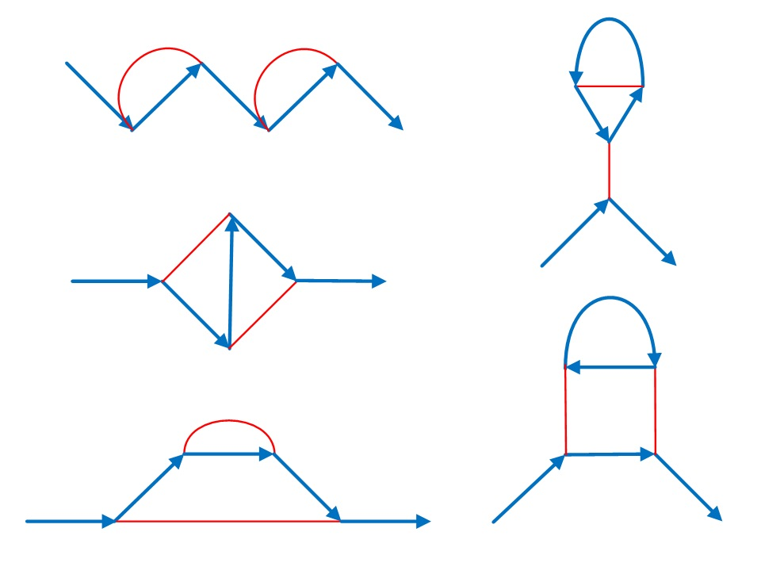

Project Euler 781
Project Euler 781
题目
Feynman Diagrams
Let \(F(n)\) be the number of connected graphs with blue edges (directed) and red edges (undirected) containing:
two vertices of degree \(1\), one with a single outgoing blue edge and the other with a single incoming blue edge.
\(n\) vertices of degree \(3\), each of which has an incoming blue edge, a different outgoing blue edge and a red edge.
For example, \(F(4)=5\) because there are 5 graphs with these properties:

You are also given \(F(8)=319\).
Find \(F(50\,000)\). Give your answer modulo \(1\,000\,000\,007\).
NOTE: Feynman diagrams are a way of visualising the forces between elementary particles. Vertices represent interactions. The blue edges in our diagrams represent matter particles (e.g. electrons or positrons) with the arrow representing the flow of charge. The red edges (normally wavy lines) represent the force particles (e.g. photons). Feynman diagrams are used to predict the strength of particle interactions.
解决方案
令\(N=50000.\)可见，每个内部点恰好贡献一个红半边，红边必须两两配对，所以\(n\) 为奇数时，\(F(n)=0.\)
可见，蓝色边子图有若干有向环和一条以两个1度顶点的有向路径组成（分别称为源点和汇点）。我们称这条路径为基线。把汇点到源点补上一条虚拟蓝边，则整张图的蓝边部分就统一成了若干个有向环（其中一个环是基线加上虚拟边）。
因此，我们接下来按如下方式遍历内部顶点：逐个处理蓝环，并在每个环内按蓝边方向处理。当新开一个环时，必须通过某条尚未配对的红半边把它接入已处理部分，从而保证部分联通。并且题目不允许顶点有蓝色自环，所以蓝环长度都至少为 \(2\)。
设蓝环长度为 \(a_1,\dots,a_k\)（每个 \(a_i\ge 2\)），则对应权重为\(\dfrac{1}{a_1a_2\cdots a_k\cdot k!},\)其中\(\dfrac1{a_i}\) 来自单个有向环的循环对称；\(\dfrac1{k!}\) 来自多个环的无序性。
于是仅蓝环的普通生成函数为
\[ V(x)=\exp\left(\sum_{\ell\ge 2}\frac{x^\ell}{\ell}\right) =\exp\left(-x-\log(1-x)\right) =\dfrac{e^{-x}}{1-x}. \]
基线长度记为 \(g\ge 1\)，它是一个被区分的有向链，因此贡献为\(x+x^2+x^3+\cdots=\dfrac{x}{1-x}.\)于是含一条基线 + 任意若干蓝环的蓝色边结构生成函数为
\[ W(x)=\frac{x}{1-x}V(x)=\frac{x e^{-x}}{(1-x)^2}. \]
对于 \(2m\) 个内部点，红边配对数为\((2m-1)!!=\dfrac{(2m)!}{2^m m!}.\)这可以通过与\(\displaystyle E(x)=e^{x^2/2}=\sum_{m\ge 0}\frac{x^{2m}}{2^m m!}\)做逐系数乘积（和多项式加法类似，只是系数相乘）并再乘上 \(n!\) 来实现。
记 \(\ast\) 为逐系数乘积，设\(\displaystyle h(x)=E(x)\ast V(x)=\sum_{n\ge 0} h_n x^n,\)再定义\(\displaystyle g(x)=\sum_{n\ge 0} n!h_n x^n.\)则 \(g(x)\) 正好对应仅蓝环和红边配对的计数生成函数（允许非连通）。
同理，对含基线的开放图（暂不要求连通）也可作同样变换。将连通/非连通分解整理后，可以得到：
\[ f(x)=\frac{(\log g(x))'}{1-x}, \]
并且原题答案满足\(F(n)=[x^n]f(x).\)
因为 \(E(x)\) 只有偶次项，所以 \(h_n\) 的奇次项为 \(0\)，从而 \(g(x)\) 也只有偶次项。对 \(n=2m\)，有\(\displaystyle [x^{2m}]V(x)=[x^{2m}]\frac{e^{-x}}{1-x}=\sum_{k=0}^{2m}\frac{(-1)^k}{k!}.\)
而错排数满足\(\displaystyle !N=N!\sum_{k=0}^{N}\frac{(-1)^k}{k!}.\)因此\([x^{2m}]V(x)=\dfrac{!(2m)}{(2m)!}.\)又因为\([x^{2m}]E(x)=\dfrac1{2^m m!},\)逐系数乘积后再乘上 \((2m)!\)，得到\([x^{2m}]g(x)=\dfrac{!(2m)}{2^m m!}.\)于是可写成
\[ g(x)=A(x^2),A(y)=\sum_{m\ge 0} a_m y^m,a_m=\frac{!(2m)}{2^m m!}. \]
现在我们利用偶函数结构，把答案压到一半下标。因为 \(g(x)=A(x^2)\)，所以\((\log g(x))' = 2x\dfrac{A'(x^2)}{A(x^2)}.\)这显然是奇函数。再除以 \(1-x\) 后，系数会出现成对相等现象，因此\(F(2m-1)=F(2m).\)而原题只在偶数点有意义，我们定义\(\displaystyle P(y)=\sum_{m\ge 1} F(2m)y^m.\)把上式整理成 \(y\)-变量后可得
\[ P(y)=\frac{2y}{1-y}\cdot \frac{A'(y)}{A(y)}. \]
这是从 \(f(x)=\dfrac{(\log g(x))'}{1-x}\) 到半维度序列的关键压缩。
接下来把前面的生成函数关系进一步压缩成一个简单的线性递推，从而把问题转化为一个多项式逆元系数的提取。
由错排数递推\(!n = n\cdot !(n-1)+(-1)^n\)可推出\(a_m=(2m-1)a_{m-1}-\dfrac{2m-1}{2^m m!},(m\ge 1).\)把它转成生成函数形式，可得\((1-y)A(y)-2y^2A'(y)=(1-y)e^{y/2}.\)
令\(\displaystyle B(y)=e^{-y/2}A(y)=\sum_{m\ge 0} b_m y^m.\)代入上式并约去 \(e^{y/2}\)，得到\(2y^2B'(y)+(y+y^2-1)B(y)+(1-y)=0.\)按系数比较可得初值\(b_0=1, b_1=0,\)以及对 \(m\ge 2\)，\(b_m=(2m-1)b_{m-1}+b_{m-2}.\)
于是 \(B(y)\) 的系数可以在线性时间内递推出前若干项。
前面已经得到\(P(y)=\dfrac{2y}{1-y}\cdot \dfrac{A'(y)}{A(y)}.\)和前面的微分关系，联立可得，\(1-yP(y)=\dfrac{e^{y/2}}{A(y)}=\dfrac1{B(y)}.\)设\(\displaystyle Q(y)=\frac1{B(y)}=\sum_{m\ge 0} q_m y^m,\)则\(P(y)=\dfrac{1-Q(y)}{y}.\)
因此\(F(2m)=[y^m]P(y)=-[y^{m+1}]Q(y).\)也就是说，只要计算出 \(B(y)\) 的逆级数 \(Q(y)=B(y)^{-1}\)，就能得到答案。
因此，令 \(n=2m\) 为偶数，则先递推出\(b_0,b_1,\dots,b_{m+1},\)其中\(b_0=1, b_1=0, b_i=(2i-1)b_{i-1}+b_{i-2}.\)构造截断多项式\(\displaystyle B(y)=\sum_{i=0}^{m+1} b_i y^i,\)并求其逆级数（截断到 \(y^{m+1}\)）：\(Q(y)=B(y)^{-1}\pmod{y^{m+2}}.\)最终答案为\(F(2m)\equiv -[y^{m+1}]Q(y).\)
代码
1 | from flint import nmod_poly |